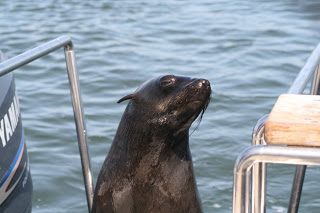

Notebook of a Return to My Native Land - part 7
Wednesday, December 13, 2006
The Wind City
One thing that has to be said about the Namibians is that they are really nice and friendly as a people. We met a couple on the plane, a doctor and his wife, who, upon hearing that we were getting to Windhoek on a Sunday without a pick-up prearranged, kindly offered to take us to the town centre (they were extremely surprised that we had decided to spend seven days in Windhoek and were convinced we'd get bored after the first, as the entire city can be seen in one day).
Unlike South-Africa, the main concern in Namibia is not that you will get mugged but that you'll get stuck somewhere. At worst you'll get overcharged. As it happened, we got lucky and the forty-minute ride into town was done in luxury and comfort. This was just as well as the sun outside was baking hot. Windhoek is, at this time of the year, much warmer than Jo'burg. One of the side-effects of the heat is that landing in the capital is a troublesome affair, with the plane jittering a lot. It feels as if you are in the most turbulent spot in the sky, but with the land getting closer and closer.
After a pleasant car ride and a nice chat we got to the town proper. We then found out that the map of Windhoek in Lonely Planet is actually incorrect, and the street which shows up as Puccinni street is actually called something else. Streets in Windhoek have funny names. There is an entire block with streets named after classic music composers such as Beethoven and Mozart. A lot of names are in German, such as Beethovenstrasse. Namibia was a German colony a long time ago but still maintains strong links with Germany. There are around 30,000 white Namibians of German descent and around 100,000 white Namibians altogether; there are around 2 million people in total in the country. Namibia is mostly desert and you really get that feeling as you drive around. On a Sunday you scarcely see people.
Eventually we found Puccini street, which is about 15 minutes walk from the centre of town. Puccini lodge is a nice place, but its a lot more expensive than what we were paying in Jo'burg. In fact, that is another trait of African backpacking: its a lot dearer than Asia/Australia. In Jo'burg we were paying 200 rand for a double room, which was already quite expensive; in Windhoek, Puccini charged 320 Namibian dollars. Namibian dollars are pegged to the rand, and South-African rand is also legal tender in the country. This made our life easier. Note though that Namibian dollars are not legal tender in South-Africa, so one has to change all the money back to rands before going back.
The staff at Puccini's is extremely friendly and the facilities are, much like Gemini's, very tidy. It is slightly more upper market than Gemini's and breakfast is included, but these features are not enough to justify the additional 120 dollars charged. Most of the backpackers at Puccini's were over forty and appeared to be German.
After a good sleep we ventured out in town. This was on the Monday. Windhoek is an extremely quiet place. It is very hard to describe how quiet this capital is. The main road is Independence Avenue, and it runs for miles and miles on end. The part of it that crosses the town centre has quite a few banks, offices and a few flats. It also has quite a few shops of different kinds such as you'd expect to find in any city centre. The surprising thing is their number. I'd say Windhoek's centre is smaller than the Southampton's, and Southampton is pretty small.
It doesn't take more than a few hours in the country to figure out that Namibia is still very much divided along ethnic lines. We did get this impression in South-Africa too (we didn't see any mixed couples in Jo'burg although there were plenty of white and black people out and about), but not to the extent you see in Namibia. Here, almost without exception, all the businesses are owned by white Namibians and almost without exception all employees are black. Almost all the nice big SUVs and jeeps are owned by white Namibians and all the old bangers are owned by black Namibians. In Windhoek you do see some black people shopping in malls, but not to the extent you see in South-Africa. So it seems that, for all of its faults, the Black Empowerment and other programmes by the South-African government are actually having some positive effects.
One peculiarity of shopping in Namibia is searching. Every time you leave a shop, a security guard checks the contents of your bags against your receipt. This is done to every single customer, black, colored, white or asian, without fail, in any shop, so don't go losing your receipt before you exit the store. And what's more, if you enter the same shop twice, they'll re-check the bags. Best to be careful and keep all receipts.
On the whole, just like with Jo'burg, Windhoek is an expensive place. One can easily spend 140 to 160 dollars on a meal for two, and most dishes cost around 40-60 dollars.
The other interesting thing, which also applies to South-Africa, is the lack of African culture. You don't hear really loud African music coming out of the cars of either white or black Namibians. Everyone seems to listen to either Hip-Hop or Pop/Rock music. Its really strange. The music tastes are pretty much like Britain or Australia and nothing at all like Gambia or the Portuguese speaking African countries, where African music is everywhere and everyone, white or black, listens to it. The only time when we heard a bit of Kizomba (African music) was on the way to the airport when we were off to Angola (and then, the driver was of Angolan descent).
Katatura
One of our objectives was to see how black people live. You can easily do that these days, since there are township excursions. This is also one of the very few opportunities you get to be a patron of a black business in Namibia. We took a two-hour trip into Katatura, known as the Namibian Soweto. On the minibus with us was a German tourist, who works as a journalist back home. The trip illustrated how deep and recent the wounds are in Namibia. Katatura was a black-only township; the colored township is up the road. Many houses in the townships still have the original ethnic grouping, with the letters denoting the origin: D for Damara, H for Herero, and so on. Not only there was a clear division between whites, coloreds and blacks but there was a fairly large rift between the different black ethnic groups.
We went to a market in Katatura, where anything and everything gets sold. It is actually very organised, and one gets the feeling that perhaps more informal (read chaotic) markets do exist. There were many Angolans selling their wares at the market as well as buying things. They were easy to spot as they were all wearing all manner of items with an Angolan flag, such as caps, shirts, bandanas.
Later on, it was amazing to sit down in a shebeen and have a drink, overlooking the sea of zinc and corrugated iron expanding as far as the eye could see. However, it must be said that the Namibian government is doing somethings to alleviate the poverty in Katatura. For instance, they have "street lighting", which is pretty much like the lights of a football stadium. They also have many public toilets and quite a few water taps available to the public. Some of these have to be paid for but its infinitely better than say the average favela in Rio or the musseques in Luanda.
The trip ended with a visit to a women's project, which focuses in particular on disabled women. It was very nice to see "designer" items being produced using very simple techniques, such as transforming used glass bottles into beads.
Swakopmund, or Little Germany
After a few days of relaxing in Windhoek we started to get restless and it was time to do something different. So we decided to get a minibus and travel to the coastal town of Swakopmound (called just Swakop by the locals). For those not in the know, these "minibuses" are pretty much souped up Toyota Hiace vans, with the cargo compartment full of seats. Because in Namibia regulations are quite strict and there are a lot of police check-points, the minibuses don't get filled up as much as they do in other African countries such as Gambia or Angola (the quiet American had told us though that the story is somewhat different up north, but as far as Windhoek and Swakop go, we could not complain too much of overcrowding).
We paid 80 bucks per person for the four-hour journey, which is a bit of a bargain, considering the 40 minute ride to the airport costs 100 dollars per person in regular cabs. But even on the minibuses there are traits of separation. There is a more organized minibus that departs at set times (14:00 and 14:30 every day) and costs 120 dollars for the trip. This bus is almost exclusively used by tourists and white Namibians. The van is very nice looking, and it is much newer than its black counterpart, with proper seats and everything. We were happy to take the 80 dollar bus, not just because it is one of the few chances you have to help the black economy but you also get there faster as they constantly speed over 140 km/ph. Of course, you may not get there at all, as the Namibian roads are known for their car crashes.
We finally got to Swakop, and, for an extra fee, got taken straight to our doorstep. We stayed at Desert Sky Backpackers lodge, for a modest fee of 200 dollars a day. Its hard to describe this, but if we thought Windhoek was quiet, nothing had prepared us for Swakop. After all, everyone we spoke to said that Swakop is the tourist destination, all Namibians go there for the summer. We were expecting some kind of Benidorm sort of place. Instead, all we got were a few fishermen. Literally. We walked the streets, up and down, and apart form the local gardener here and there and a few tourists (and few is the operative word here), there was no one at all in the streets. We even bumped into our old acquaintance from the Katatura trip, the German reporter. Imagine the odds, finding someone you know in Namibia.
But it wasn't just in the quietness that Swakop resembles Windhoek, its also a very divided place. In fact, more so than Windhoek, even. We did not see a single person in the restaurants we went to that was not white and the vast majority of the waiters were black (I recall one white waiter, a teenager). It is actually a bit uncomfortable to be the only non-white customers in a packed place in Africa.
The other thing about Swakop is it is really cold place. I mean, really. The funny thing is its around the corner from the desert (you can walk there!) and five minutes from the beach, but man, that cold wind chills your soul. It didn't help that we'd left all of our luggage in Windhoek at Puccini's, including the fleeces, and we only had t-shirts and shorts with us. The weather was good when the sun came out, but very cold and windy otherwise. And the sea is extremely cold. Its a bit like the sea in Porto, northern Portugal. Very, very cold.
In Swakop we decided to start going on tours. We first did the desert. This was a great experience. We had a couple of teenagers doing the trip with us, on quad bikes. Shahin procrastinated as much as possible, and was determined not to have to drive a quad bike by herself, but she wanted to see the desert more than she feared driving! Although I was not afraid of driving a quad bike, I got to say I did feel the fear of god when we had to go down 45-degree dunes, more than 50 meters high. Actually, even going up them was a challenge. But it was great fun. And it was blistering cold. Luckily, the guy from the tour lent me his fleece, or I would have frozen.
We also went on a dolphin and seal trip. This was also great fun. As we got to the docks, there were three large dolphins swimming just by the boat. Amazing. It was a good omen for the day, methinks, as we got to see both big and small dolphins, and got into very close contact with the seals. Its awfully hard to take pictures of dolphins, and I think Shahin is very happy with her digital camera and the ability to take many, many shots of empty sea without having to develop them.

After a couple of days in Swakop, people started arriving. It was indeed as most people said, a rather popular place (at least in Namibian terms), its just that we got there before everybody else did. People started trickling in, and a few days later you could see a lot of new faces walking about town. The beginning of the festive season is marked with the Swakopmund Christmas Fair. This is a very nice little market, with all sorts of stuff and more importantly, lots of barbecued food, including boerwors. However, although this market is extremely nice, there is something really eerie about being in the middle of Africa surrounded by a traditionally German Christmas market, listening to German or English Christmas carols and with most people running the stalls being white Namibians and most visitors being either white Namibians or white tourists. All the stalls ran by black people were selling African art, and they were mostly stashed away near the parking lot. There were a few food stalls run by coloreds.
On our last day in Swakop we were lucky enough to meet Ewald and Heicke. Ewald is Namibian of German (Austrian) descent and Heicke is German, both teenagers. They were planning to drive down to Windhoek the next day and offered to take us, sharing petrol costs. In addition, they were also going to Walvis Bay. We joined them and departed early in the morning. There's not much to be said about Walvis Bay, other than "the flamingos outnumbered the people by 100 to 1" and the wind was even more constant than in Swakop. It is such a desert place its unimaginable: the streets are empty on a Saturday afternoon.
We then made our way back to Windhoek, spotting various different animals such as the eland and a giraffe in a game park. Other than that, the drive was quite uneventful.